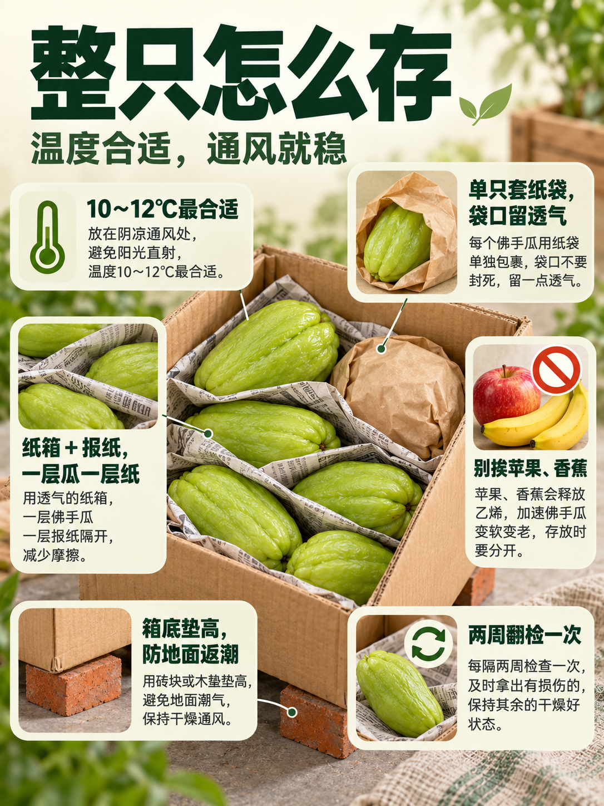

佛手瓜怎么存到明年｜整只和切开分别存
佛手瓜想存到明年，靠的是三件事：表皮完整、温度低而稳、湿度不高。它比南瓜娇气，碰伤一处，整只从伤口开始烂。整只和切开的存法完全不同，分开说。
一、先挑能存的瓜
选表皮青绿、没有擦伤、瓜蒂完整的，捏上去硬实。带虫眼、有软斑的，先吃掉，别留着。嫩瓜水分大，存不住；老一点的瓜皮厚，耐放。摘的时候留一小段瓜柄，别平着切，伤口小，更耐存。买回来别洗，表面的白霜是保护层，洗掉就容易烂。摊在通风处晾一天，让表皮的潮气散掉，再入库。个头适中的比特别大的耐放，太大的中间容易空。
二、整只怎么存
温度十到十二度最合适，低了会受冷害，表面凹陷、发黑。家里没有冷库，用纸箱加报纸，一层报纸一层瓜，放在阴凉通风的北阳台。单只套纸袋，袋口别封死，留透气。别和苹果、香蕉放一起，那些会释放乙烯，瓜老得快。每隔两周翻一次，发现软的立刻拿出来。这样存，两三个月问题不大。箱子别直接贴地，垫两块砖，地面返潮会影响下半层。地窖、沙藏也行，一层沙一层瓜，别贴地。
三、想存到明年要做什么
想跨年，得在收瓜之后就处理。表皮完好的，用保鲜膜单只包紧，排出空气，装进纸箱，放在五到八度的地方，能拖到春节前后。切开过的，去瓤、切块，焯水一分钟，过凉沥干，分袋冷冻，能放到明年春天，但只适合炖煮，不适合清炒。也可以晒瓜干，切片晒到卷边，密封保存，冬天泡发炒肉。三种方式各有取舍，按家里地方选。
四、坏了的信号和救法
表皮出现水渍状斑、按压下陷、闻到酸味，就是烂了，整只别再吃。只烂一小块的，切掉烂处再多切两厘米，剩下的闻着正常才可以用，做熟吃。切开的瓜放冰箱，最多三天，切面贴保鲜膜。冷藏过的瓜容易出水，炒之前用盐杀一下水，口感好一些。发芽的瓜别吃，养分已经转到芽上，味道也变了。存的过程中别频繁翻动，碰伤的地方就是烂的起点。晾晒的时候翻面，两面都干才不发霉。
以上为佛手瓜存放的一般做法，品种与储存条件差异较大，家庭环境很难存满一年，建议分批处理，别集中堆放。
